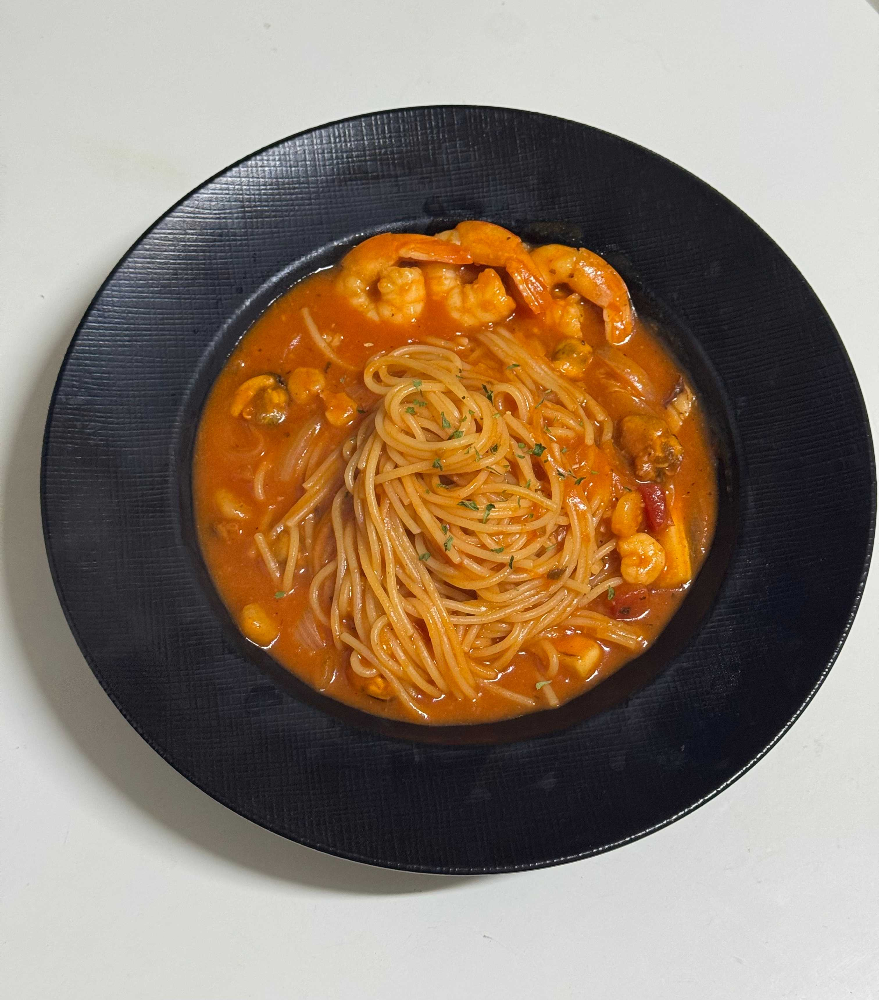
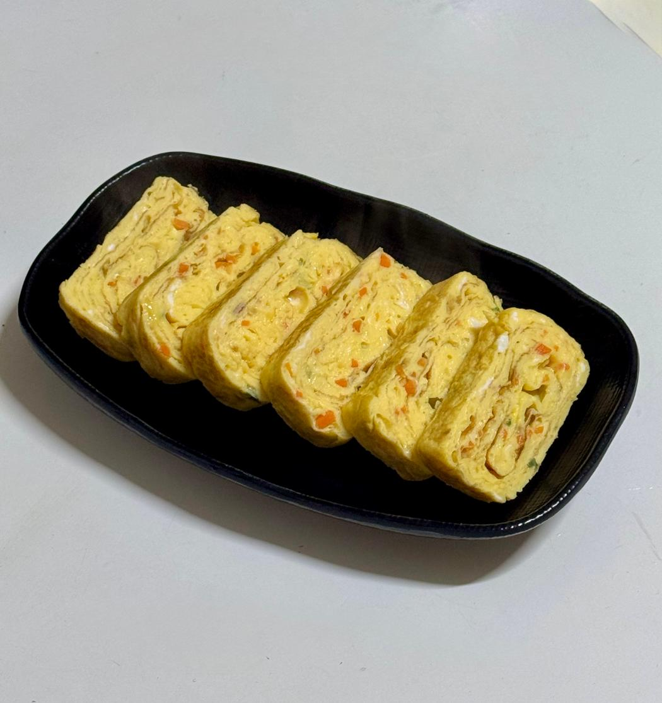
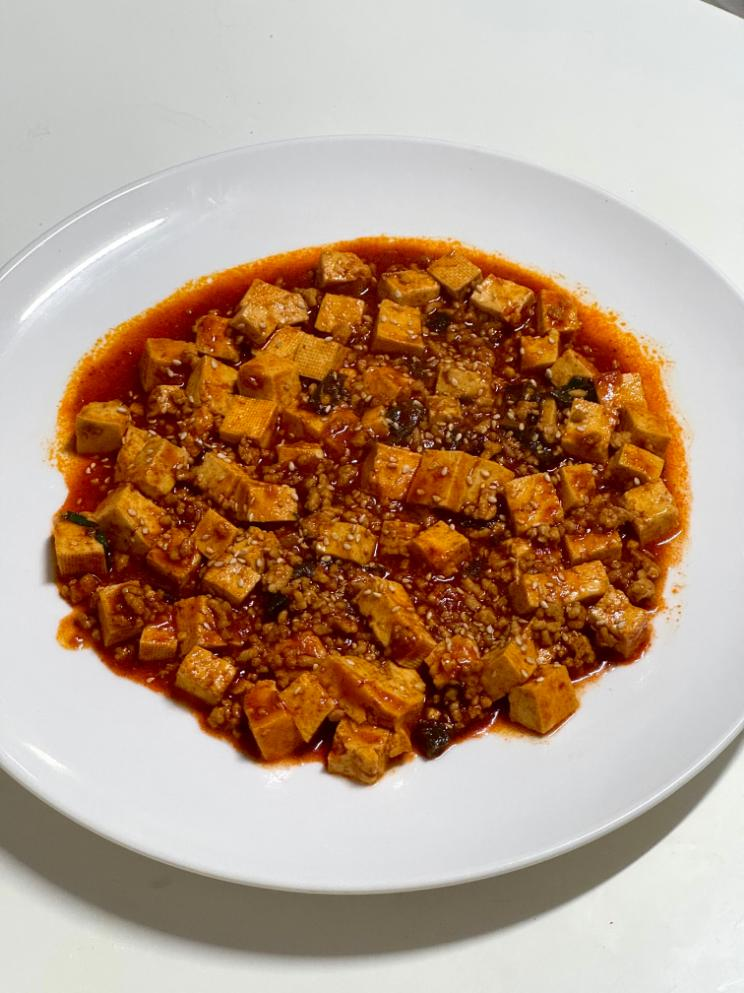
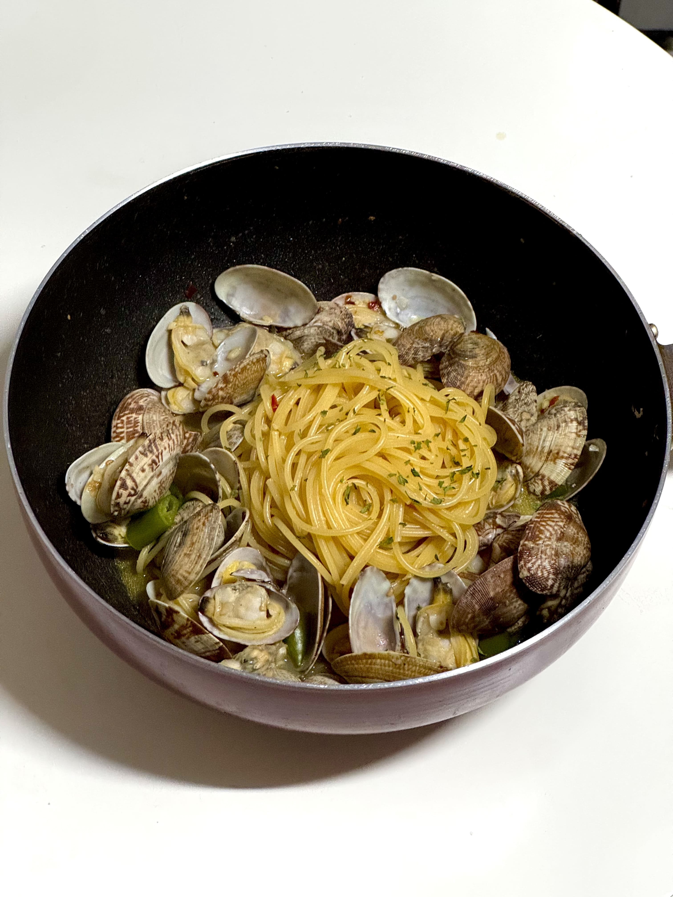
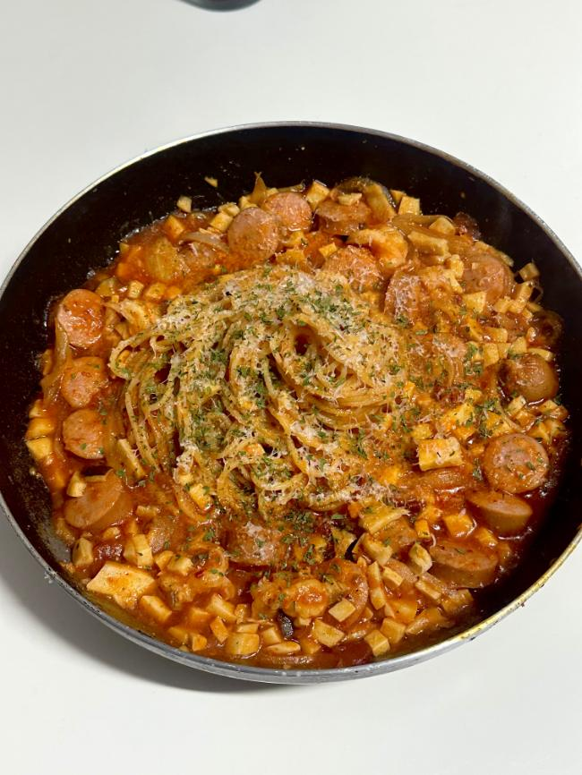
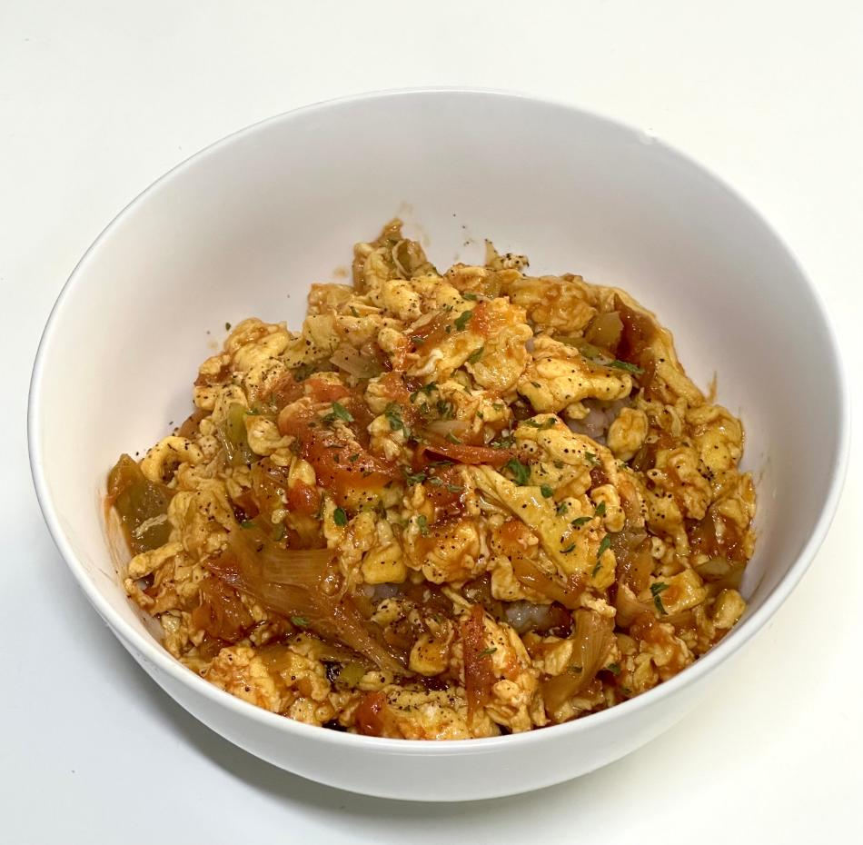

단무지 치즈 주먹밥
배달하고 남은 단무지를 이용한 주먹밥!

원팬 해물 파스타
한 팬으로 끝! 손쉽게 즐기는 해물 파스타

카레
밥 위에 푸짐하게 올려 먹는 집밥 카레!

스팸마요덮밥
스팸의 짭짤함과 달달한 마요 소스의 조합!

베이컨 치즈말이
짭짤한 베이컨과 고소한 치즈의 조화!

뿌링 소스
뿌링클 소스랑 매우 흡사한 맛!

불닭 팽이버섯 🌶️
씹는 재미가 있는 불닭 팽이버섯!

지코바 치킨 🌶️
불향 가득한 매콤달콤 양념의 정석!

텐신항
부드러운 달걀과 소스가 어우러진 중화풍 덮밥!

치킨
간단하게 즐기는, 짭조름한 치킨 한끼!

새송이버섯 버터구이
입안 가득 퍼지는 달콤한 풍미의 한입!

계란말이
운동 후, 든든한 단백질 반찬으로 딱!

고기라면
진한 국물에 매콤함을 더한 한 그릇!

카라멜 식빵
한입 베어물면 퍼지는 달콤한 풍미!

대창덮밥 🌶️🌶️
불맛과 매콤함이 어우러진 강렬한 한입!

비빔국수 🌶️
입맛 확 살려주는 매콤새콤한 한입!

마파두부
밥 비벼 먹기 딱 좋은 매콤 고소함!

순두부찌개
부드러움 속에 매콤한 깊이, 따뜻한 한 그릇!

칠리새우
달콤하면서도 매콤한 맛이 매력적인 칠리새우!

봉골래 파스타 🌶️
화이트와인 향에 칼칼함을 더한 파스타!

닭곰탕
속을 따뜻하게 채워주는 깊고 진한 닭곰탕!

미역국
바다의 향을 담은 건강 한 끼!

진미채볶음
할머니도 좋아하셨던 반찬!

토마토 새우 스파게티 🌶️
탱글한 새우와 상큼한 토마토 소스의 조화!

소세지볶음
케첩 풍미 가득한 밥도둑!

맛계란
짭조름한 반숙 계란 간장조림!

치킨무 깍두기
아삭하고 시원한 입가심 무 반찬!

토마토 계란 밥
부드러운 계란과 토마토가 어우러진 맛!